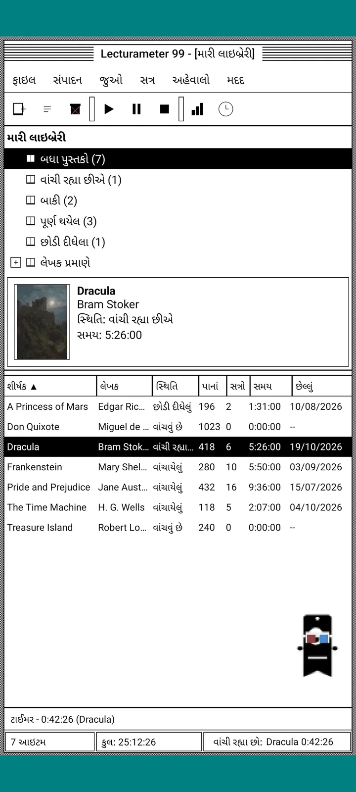
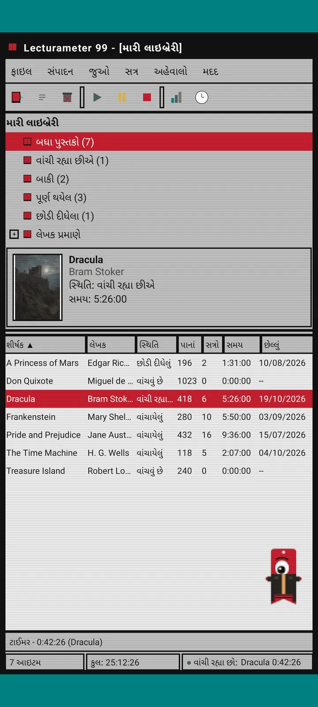
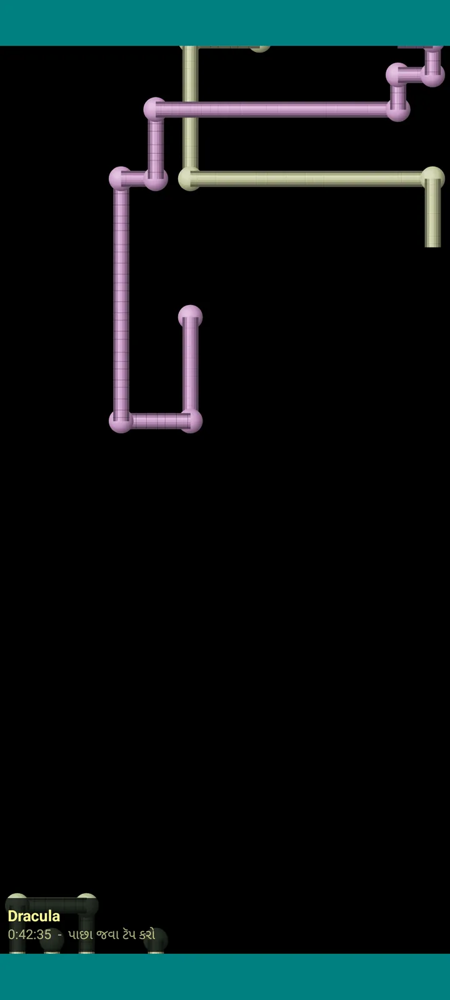

Lecturameter 1999
Lecturameter, જાણે તમે તેને 1999 માં CD-ROM પરથી ઇન્સ્ટોલ કર્યું હોય. એપનું એક વૈકલ્પિક ક્લાયન્ટ, વિન્ડો, મેનુ અને ટેબલ સાથે, જે તમારા સાચા બેકઅપ ખોલે છે.

આ શું છે
નેવુંના દાયકાના અંતનો ડેસ્કટોપ પ્રોગ્રામ, તમારા ફોનમાં. વાદળી-લીલા ડેસ્કટોપ પર એક જ વિન્ડો, મેનુ બાર, ટૂલબાર, ફોલ્ડર ટ્રી, ગીચ ટેબલ અને સ્ટેટસ બાર.
- લાઇબ્રેરી ટ્રી: બધાં પુસ્તકો, વાંચી રહ્યા છીએ, બાકી, પૂર્ણ થયેલ, છોડી દીધેલું અને લેખક પ્રમાણે
- શીર્ષક, લેખક, સ્થિતિ, પાનાં, સત્રો, સમય અને છેલ્લું વાંચન ધરાવતું ટેબલ. ક્રમ બદલવા કૉલમના મથાળા પર ટૅપ કરો
- સાચી પુસ્તક શોધ, Lecturameter વાપરે છે તે જ કેટેલોગ સાથે
- Lecturameter નો બેકઅપ અને Goodreads CSV આયાત અને નિકાસ કરે છે. તમારો ડેટા કંઈ ગુમાવ્યા વિના અંદર-બહાર જાય છે

તે શા માટે છે
એક પ્રયોગ: સાચી એપને અડ્યા વિના, ડિઝાઇનના તદ્દન અલગ સિદ્ધાંતો સાથે Lecturameter ના વિચારને શરૂઆતથી ફરી બનાવવો. બધાં પુનઃઅર્થઘટનોમાંથી 1999 વાળું મને સૌથી વધુ ગમ્યું, એટલે મેં મજાની કસરત તરીકે તેને પૂરું કર્યું અને સંપૂર્ણ ક્લાયન્ટ બનાવી દીધું. તે જાણીજોઈને Lecturameter કરતાં સરળ છે: આ એક પ્રયોગ છે અને, સિદ્ધાંતમાં, તેનો આગળ વધુ વિકાસ નહીં થાય.
- લીલા LCD ડિસ્પ્લે સાથે તરતી વિન્ડોમાં ટાઈમર. તે ખસે છે, ટાસ્કબારમાં નાનું થાય છે અને સ્ટેટસ બારમાં ગણતરી ચાલુ રાખે છે
- તમે બંધ કરો ત્યારે, સત્ર સાચવવાનો ડાયલોગ તમારાં પાનાં પૂછે છે અને તમારી ગતિ ગણે છે, બિલકુલ Lecturameter ની જેમ
- સાચવેલાં સત્રો Lecturameter નાં સત્રો જ છે: જો તમે Lecturameter 1999 નો બેકઅપ નિકાસ કરીને Lecturameter માં આયાત કરો, તો તે આધુનિક એપમાં પાછાં આવે છે.

વાંચન અહેવાલ
આંકડા એક છાપેલા અહેવાલ જેવા છે: સારાંશ, બ્લોક બાર સાથે પુસ્તક દીઠ સમય, દરરોજનાં પાનાંમાં ઝડપ, અક્ષરોથી દોરેલું વર્ષનું કૅલેન્ડર અને છેલ્લા સાત દિવસ.

સત્રોનો ઇતિહાસ
પ્લસ અને માઇનસ સાથેના ટ્રીમાં પુસ્તક પ્રમાણે જૂથબદ્ધ સત્રો, ઉપર પાંચ આંકડા સાથે: સત્રો, કુલ સમય, પાનાં, મિનિટ દીઠ પાનાં અને દરરોજનાં પાનાં.

સત્ર સાચવો
તારીખ, મિનિટ, પહેલું અને છેલ્લું પાનું, ટિપ્પણી. તમે લખો તેમ સારાંશ પાનાં અને ગતિ ગણે છે. જો તમે છેલ્લા પાને પહોંચો, તો તે પૂછે છે કે તમે પુસ્તક પૂરું કર્યું કે નહીં.

Pagi 99
Pagi પણ 1999 માં જાય છે: તે સમયના ઑફિસ સહાયકોની જેમ પિક્સેલવાળો અને સ્ક્રીન પર છૂટો ફરતો. તમે તેને ખેંચી શકો છો, ટૅપ કરો ત્યારે તે કંઈક બોલે છે અને પીળા ફુગ્ગાઓમાં ટીપ્સ બતાવે છે.
થીમ્સ
ક્લાસિક 98 મફત છે અને ડિફૉલ્ટ છે. પેક બીજી છ થીમ ઉમેરે છે, દરેકની પોતાની પૃષ્ઠભૂમિ અને પોતાના અવાજો સાથે.

તેને જુઓ મેનુમાંથી પસંદ કરો
જુઓ, થીમ... સાત થીમ સાથેની એક વિન્ડો ખોલે છે. ફેરફાર એકસાથે દરેક વિન્ડો, ટાઈમર અને Pagi સુધી પહોંચે છે.
- ક્લાસિક 98, મફત અને ડિફૉલ્ટ: રાખોડી વિન્ડો, ઘેરા વાદળી ટાઇટલ બાર અને વાદળી-લીલું ડેસ્કટોપ
- થીમ પેક: 1984, ગમડ્રોપ, મેમરી, ટાવર્સ, કોર અને 8-બિટ
- દરેક થીમ પોતાની ડેસ્કટોપ પૃષ્ઠભૂમિ અને ટૅપ, વિન્ડો તથા ટાઈમર માટે પોતાના અવાજો લાવે છે
- જો તમે શાંતિમાં વાંચતા હો, તો જુઓ, થીમના અવાજો તેમને બંધ કરે છે

ક્લાસિક 98
રાખોડી વિન્ડો, ઘેરા વાદળી ટાઇટલ બાર અને વાદળી-લીલું ડેસ્કટોપ. મફત, એપ તેની સાથે જ ખૂલે છે.

1984
એક-બિટ કાળું-ધોળું ડેસ્કટોપ, ટપકાંની ભાતો અને ચોરસ વિન્ડો સાથે.

ગમડ્રોપ
રંગીન પારદર્શક પ્લાસ્ટિક, ગોળ બટનો અને પૃષ્ઠભૂમિમાં પટ્ટા.

મેમરી
નેવુંના દાયકાના ડિસ્ક કન્સોલનાં મેનુ, ઘેરા વાદળી રંગોમાં.

ટાવર્સ
નેવુંના દાયકાનું બીજું ડિસ્ક કન્સોલ, આછી વાદળી રેખાઓ સાથે રાત્રિ વાદળી.

કોર
કાળું અને લીલું કન્સોલ, જાણે ક્યારેય બંધ ન થતી સ્ક્રીન.

8-બિટ
મોટા પિક્સેલ, થોડા રંગો અને ચોસલાં જેવા અક્ષરો.

ચૂકવતાં પહેલાં અજમાવો
લૉક થયેલી થીમ પર ટૅપ કરો અને આખી એપ તે થીમમાં બદલાઈ જાય છે. જો તમે ખરીદ્યા વિના બંધ કરો, તો પહેલાંની થીમ પાછી આવે છે.
સ્ક્રીનસેવર
તે ફક્ત ત્યારે જ દેખાય છે જ્યારે ટાઈમર ચાલુ હોય અને તમે ફોનને અડો નહીં. તે 1, 3 કે 5 મિનિટ રાહ જુએ છે, અથવા ક્યારેય નહીં. એક ટૅપ અને તમે પાછા, ટાઈમર ગણતરી ચાલુ રાખે છે.

ઊડતાં પુસ્તકો
કાળી સ્ક્રીન પર પોતાનાં પૂંઠાં ફફડાવતાં ઊડતાં પિક્સેલ પુસ્તકો.

અક્ષરોનું મેદાન
ઘણી લિપિઓના અક્ષરો ધીમે ધીમે પસાર થાય છે, તારાઓના મેદાનની જેમ.

પાનાંની પાઇપો
પાનાંથી બનેલી પાઇપો, જે સ્ક્રીન ભરાઈ જાય ત્યાં સુધી જાતે દોરાતી રહે છે.

ઊછળતો Pagi
સ્ક્રીનની કિનારીઓ પરથી ઊછળતો Pagi.

વાંચન ઘડિયાળ
મોટા LCD અંકોમાં સત્રનો સમય.

Pagi માટે પોશાક
Pagi 99 માટે આઠ પોશાક. તમે તેમને જુઓ, Pagi નો પોશાક... માં પસંદ કરો છો, અને ચૂકવતાં પહેલાં પહેરાવીને જોઈ શકો છો.
- કૅસેટ પ્લેયર
- ઊંધી ટોપી
- 3D ચશ્માં
- નિયોન સનગ્લાસ
- હાથમાં ફ્લોપી ડિસ્ક
- ચામડાનું જૅકેટ
- ખિસ્સાનું પાલતુ
- કાર્ડબોર્ડનો મુગટ
સ્ટોર
તમારું વાંચન નોંધવા માટે એપ મફત અને સંપૂર્ણ છે. જે ખરીદી શકાય છે તે ફક્ત તેનો દેખાવ બદલે છે.
આખી એપ, કોઈ સમય મર્યાદા વિના.
- લાઇબ્રેરી, શોધ, ટાઈમર અને સત્રો
- વાંચન અહેવાલ અને સત્રોનો ઇતિહાસ
- Lecturameter બેકઅપ અને Goodreads CSV, અંદર અને બહાર
- ક્લાસિક 98 થીમ અને Pagi 99
- કોઈ એકાઉન્ટ નહીં અને કોઈ જાહેરાત નહીં
એક જ વારની ચુકવણી, કોઈ સબ્સ્ક્રિપ્શન નહીં.
- થીમ પેક, €3.49: પૃષ્ઠભૂમિ અને અવાજો સાથે 6 થીમ, ઉપરાંત સ્ક્રીનસેવર
- સ્ક્રીનસેવર, €1.99: 5 સ્ક્રીનસેવર
- Pagi ના પોશાક, €1.99: 8 પોશાક
- આખું 1999, €4.49: થીમ્સ, સ્ક્રીનસેવર અને પોશાક
મદદ મેનુમાં વૈકલ્પિક ટિપ્સ, જો તમે મને કૉફી પીવડાવવા માંગતા હો.
થીમ્સ અને પોશાક ચૂકવતાં પહેલાં લાઇવ અજમાવી શકાય છે. જો તમે ખરીદ્યા વિના બંધ કરો, તો તમારી પાસે જે હતું તે પાછું આવે છે.
Lecturameter ની સરખામણીમાં શું બદલાય છે
Lecturameter જેવું જ
- એ જ ડેટા: પુસ્તકો, સત્રો, સ્થિતિ, સ્કોર અને નોંધો. બેકઅપ ફાઇલ બંને એપમાં એક જ છે.
- શીર્ષક અથવા લેખકથી પુસ્તક શોધ.
- સાચું ટાઈમર: તે બૅકગ્રાઉન્ડમાં અને તમે એપ બંધ કરો તો પણ ગણતરી ચાલુ રાખે છે.
- કોઈ એકાઉન્ટ નહીં, કોઈ જાહેરાત નહીં, પુસ્તકો શોધવા સિવાય કોઈ કનેક્શન નહીં.
- Lecturameter જેટલી જ ભાષાઓ.
ફક્ત 1999 આવૃત્તિમાં
- 1999 નું ડેસ્કટોપ ઇન્ટરફેસ. Material નહીં.
- સાચી વિન્ડો: તમે તેમને ખેંચો, નાની કરો અને ચોકડીથી બંધ કરો.
- લખાણમાં વાંચન અહેવાલ, અક્ષરોથી દોરેલા કૅલેન્ડર સાથે.
- લાંબું દબાવતાં સંદર્ભ મેનુ અને જો તમે કીબોર્ડ જોડો તો કીબોર્ડ શૉર્ટકટ.
- ટીપના ફુગ્ગાઓ સાથે પિક્સેલવાળો Pagi 99.
- પોતાની પૃષ્ઠભૂમિ અને અવાજો સાથે વૈકલ્પિક થીમ્સ, ટાઈમર ચાલતું હોય ત્યારે સ્ક્રીનસેવર અને Pagi માટે પોશાક.
જાણીજોઈને શું નથી
- Pro નહીં અને સબ્સ્ક્રિપ્શન નહીં. તમારું વાંચન નોંધવું પૂરેપૂરું મફત છે, સ્ટોર ફક્ત દેખાવ વેચે છે.
- પડકારો, Bingo, વાર્ષિક Wrapped કે વિજેટ્સ નહીં.
- ઇમર્સિવ સત્ર, વાતાવરણના અવાજો કે Google Drive બેકઅપ નહીં. બેકઅપ ફાઇલ તરીકે સાચવાય છે.
બંધ પરીક્ષણ
Lecturameter 1999 Google Play પર બંધ પરીક્ષણમાં છે. iOS પછીથી આવશે, હજી કોઈ તારીખ નથી.
- ગ્રુપમાં જોડાઓ groups.google.com/g/lecturameter-1999
- ટેસ્ટર તરીકે અહીં નોંધણી કરો play.google.com/apps/testing/com.lecturameter.r1999
- અહીંથી ઇન્સ્ટોલ કરો Google Play
Google Play પર બંધ પરીક્ષણમાં, iOS પછીથી. બ્લોગ પોસ્ટ વાંચો તે ક્યાંથી આવ્યું અને શું અપેક્ષા રાખવી તે જાણવા માટે.